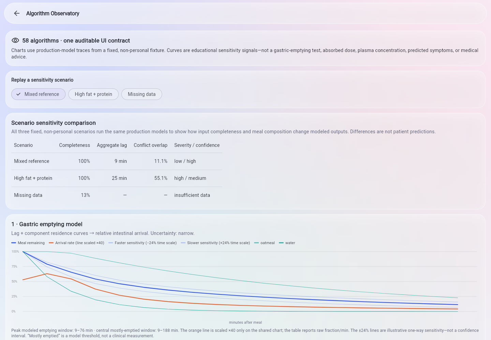
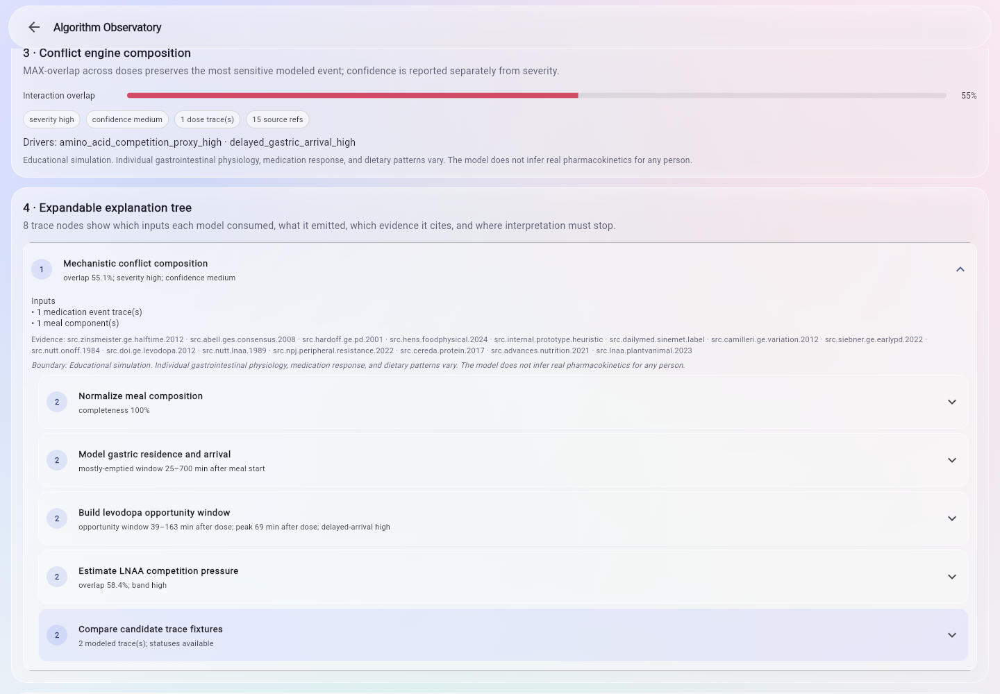
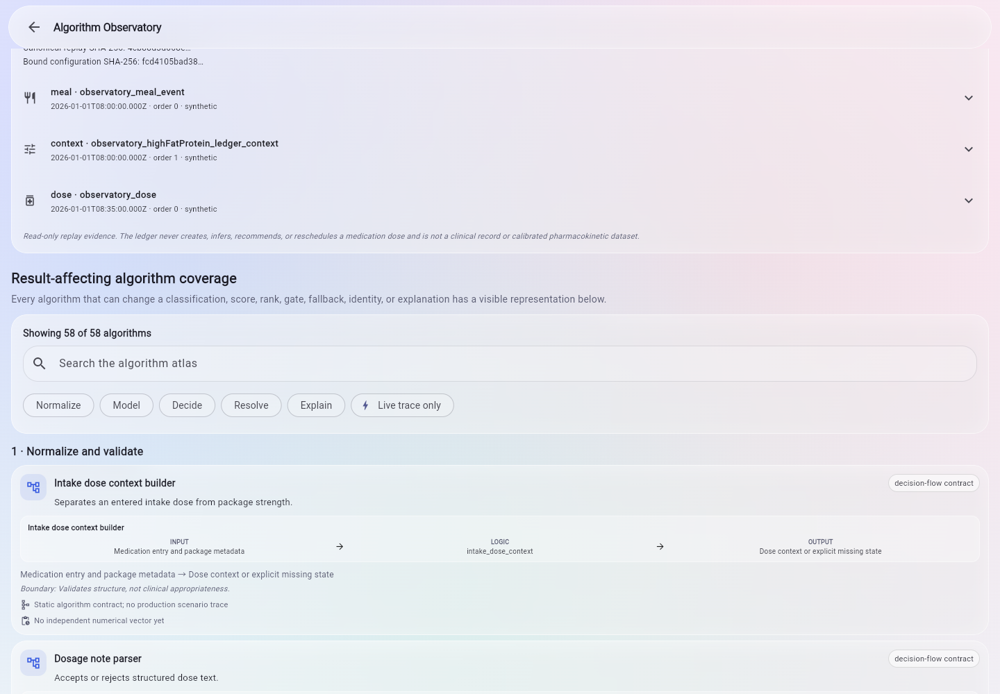
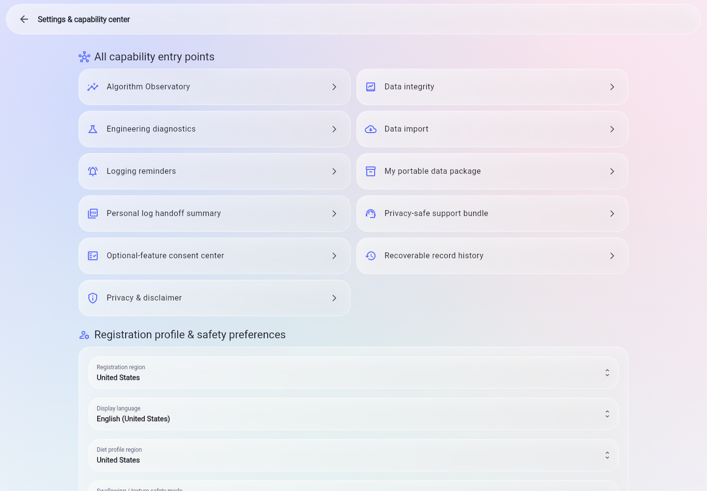
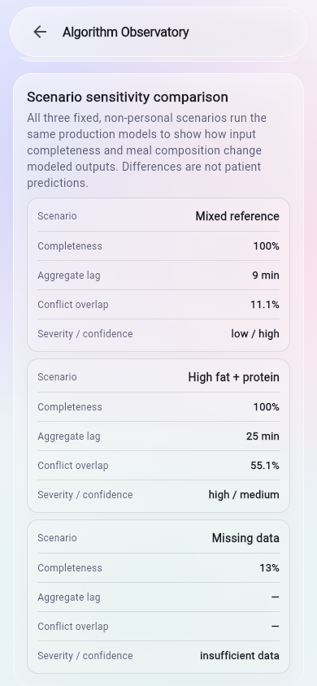

The local-mode scenario is synthetic and non-personal.

Runtime evidence · main@23619f1
An inspectable, local-first Flutter prototype with deterministic educational rule traces.
These captures replay fixed, non-personal scenarios in local mode so reviewers can inspect model sensitivity, rule composition, algorithm coverage, and evidence boundaries without implying a personalized result.
Browser captures from main@23619f1. They are not
physical-device, native-runtime, accessibility-conformance, or
clinical-validation evidence.

Classifications, scores, gates, evidence, and traces stay deterministic.
Post-rule whitelist reranking or copy polish only.
Runtime browser captures
Five views show the captured build—and what they do not prove.


main@23619f1. It is not a permanent algorithm count or
clinical-validation claim.


System shape
The demo follows one inspectable data path.
-
Fixed non-personal fixture
The replay starts from synthetic scenario inputs, not a user profile.
-
Local-mode browser run
The capture path avoids real accounts, identifiers, and health data.
-
Deterministic decision boundary
Rules own classifications, scores, gates, evidence, and trace output.
-
Optional post-rule AI
It may only rerank rule-whitelisted items or polish copy.
Demo delivery
Use the right demo format for the audience.
Available now
30-second website
Use this static Pages site for reviewers who need the project purpose, flow, and safety boundary immediately.
Release channelDemo APK
Publish Android artifacts only as clearly labeled demo/debug APKs from the GitHub Releases page.
Source runFlutter web demo
Build or run the app from source when the reviewer needs an interactive browser demo instead of screenshots.
Media policyShort video / GIF
A short recording is useful only after it renders correctly on GitHub and passes synthetic-data media checks.
Safety boundary
This is an educational software prototype.
ParkinSUM is for software architecture review, educational walkthroughs, and synthetic-data demonstrations. It must not be used for diagnosis, treatment, medication timing, dietary guidance, clinical decision-making, patient care, or emergency support.